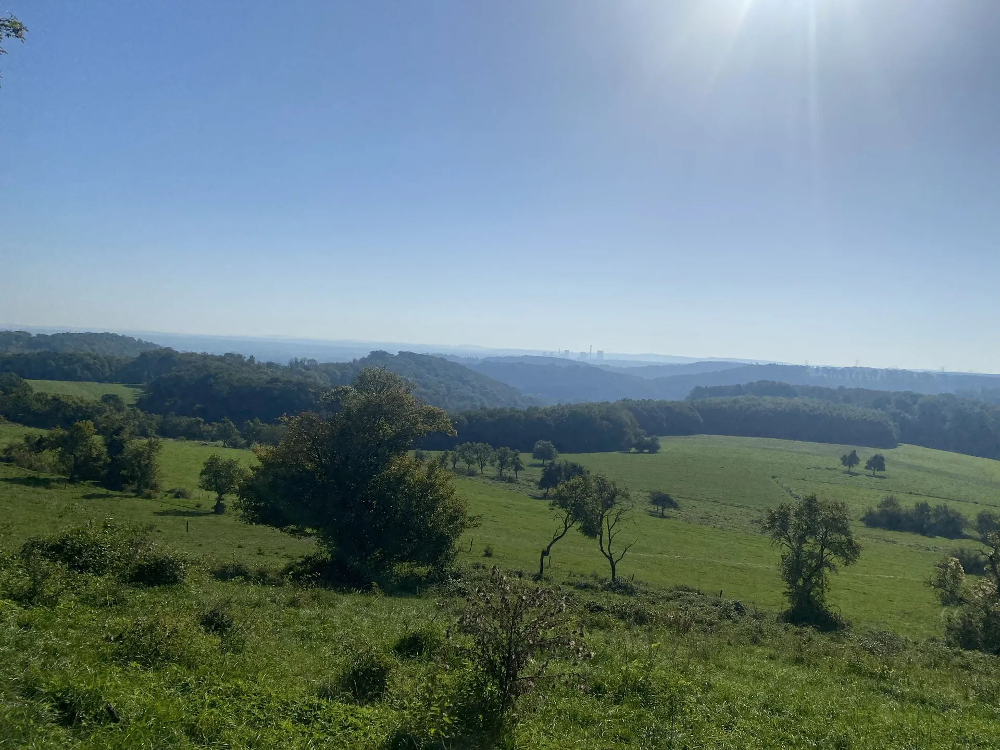

Gîtes rurais · Varsberg · Mosela
Turismo e lazer
Os trilhos partem diretamente da casa, sem atravessar estradas, a pé, de bicicleta ou a cavalo. Vários locais de interesse ficam a poucos quilómetros.
A ver nos arredores

Lago e centro náutico de CreutzwaldVela, banhos, pesca e passeios à volta do lago.
6 km
6 km

Cemitério americano de Saint-AvoldO maior cemitério militar americano da Europa.
15 km
15 km

Siderurgia de VölklingenPatrimónio Mundial da UNESCO, do outro lado da fronteira.
28 km
28 km

Museu Les Mineurs Wendel, Petite-RosselleA mina e a vida dos mineiros da Lorena.
31 km
31 km

Centro Pompidou-MetzArte moderna e contemporânea, com a catedral de Metz a dois passos.
40 km
40 km

Zoo de AmnévilleMais de 2 000 animais em 18 hectares.
55 km
55 km

Parque animal de Sainte-CroixLobos, ursos, veados e bisontes no Parque natural regional da Lorena.
60 km
60 km

Parque arqueológico de Bliesbruck-ReinheimUma cidade galo-romana e as suas termas.
61 km
61 km

O meandro do Sarre, MettlachA curva espetacular do Sarre, vista do miradouro de Cloef.
80 km
80 km
Varsberg, a floresta do Warndt e os campos


Lazer
- Desportos náuticos6 km
- Piscina7 km
- Pesca6 km
- Ténis6 km
- Caminhadasno local
- Equitaçãono local
- Golfe de Faulquemont15 km
- Florestasno local
- Estação de Saint-Avold15 km
- Padaria, comérciono local
- Calypso Saarbrücken (parque aquático)35 km